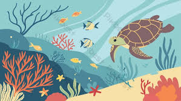
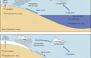

The Scope of Marine Science
Oceanography is an interdisciplinary science integrating biology, chemistry, physics, and geology. Covering 71% of the Earth's surface, the ocean regulates our climate and supports half of all life on Earth.


Marine Biology & Ecology
Marine biology explores the life forms that inhabit the sea, from microscopic phytoplankton in the sunlight zone to organisms surviving under crushing pressure in the Hadal trenches.
[Image of the vertical zones of the ocean from the sunlight zone to the abyss]Physical Oceanography
This branch analyzes the mechanics of waves, tides, and massive currents like the Gulf Stream, studying how heat and energy move across the globe.
[Image of global ocean surface currents map]

Chemical Oceanography
Examining the "chemical signature" of seawater, including salinity, trace metals, and dissolved gases that dictate the health of marine ecosystems.
Marine Geology
Marine geologists explore the seafloor's topography, studying seafloor spreading and tectonic movements that shape the Earth's crust.
[Image of the tectonic plate boundaries and seafloor spreading]

Ocean Circulation
The "Global Conveyor Belt" (Thermohaline Circulation) is a vital system driven by temperature and salt, oxygenating the deep sea over a 1,000-year cycle.
[Image of the global conveyor belt thermohaline circulation map]Ocean Acidification
As the ocean absorbs CO2, it creates carbonic acid. This chemical shift makes it harder for organisms like coral and oysters to build their protective shells.
[Image of the chemical process of ocean acidification and its effect on calcium carbonate shells]